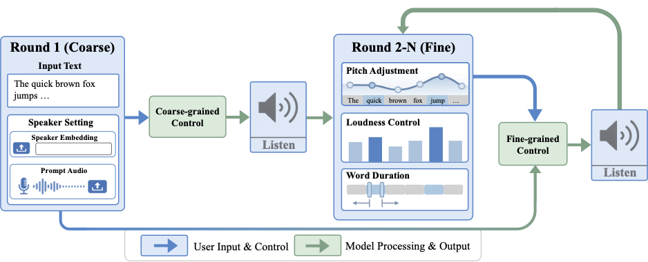

Abstract. Recent Text-To-Speech (TTS) systems have achieved strong naturalness and zero-shot voice cloning performance, but fine-grained control of expressive speech at the word or phoneme level remains challenging. We propose CtrlSpeech, a controllable, expressive TTS framework with coarse-to-fine control. Built on the DiTAR architecture, CtrlSpeech combines global speaker conditioning with phone-aligned pitch, loudness, and duration signals, enabling localized prosodic control while preserving the target speaker's timbre. This design allows users to adjust expressive attributes at a fine temporal granularity, making speech refinement more flexible and controllable. Experimental results show that CtrlSpeech achieves competitive zero-shot TTS performance and improves controllability over expressive attributes, demonstrating its effectiveness for flexible and practical expressive speech synthesis.
System Overview

Figure 1. CtrlSpeech follows a coarse-to-fine workflow: users first provide input text, and optionally specify speaker settings or provide prompt audio; in subsequent rounds, they iteratively refine pitch, loudness, and word duration.
Coarse-to-Fine Control Design
Coarse Global Control→Phone-Level Control→Local Refinement
Stage 1: Coarse
Global Speaker / Timbre Conditioning
Reference speech or speaker embeddings provide utterance-level conditioning, preserving the target speaker identity and vocal timbre.
prompt speechspeaker embeddingtimbre
Stage 2: Fine
Phone-Aligned Prosody Control
Pitch, loudness, and duration controls are aligned to phones, enabling explicit manipulation of intonation, intensity, and rhythm at fine temporal granularity.
pitchloudnessdurationphone alignment
Stage 3: Refine
Iterative Local Prosody Refinement
Users can adjust selected phone- or word-level controls and regenerate refined speech while keeping the global speaker condition fixed.
The room grew quiet, and then everyone started laughing.
reference speaker
baseline synthesis
raised phrase-level pitch
Loudness
I said we should leave now, not after the storm arrives.
reference speaker
baseline synthesis
emphasized word loudness
Duration
Please wait here for a moment before opening the door.
reference speaker
baseline synthesis
lengthened local duration
Table 1. Representative sample layout for pitch, loudness, and duration control experiments.
BibTeX
@inproceedings{zheng2026ctrlspeech,
title = {CtrlSpeech: Coarse-to-Fine Control for Expressive Speech Synthesis},
author = {Zheng, Zhisheng and Sun, Xiaohang and Liu, Zhu and Chen, Caren and Kumar, Rohith and Aggarwal, Manoj and Medioni, Gerard and Harwath, David},
booktitle = {Proc. Interspeech 2026},
year = {2026}
}